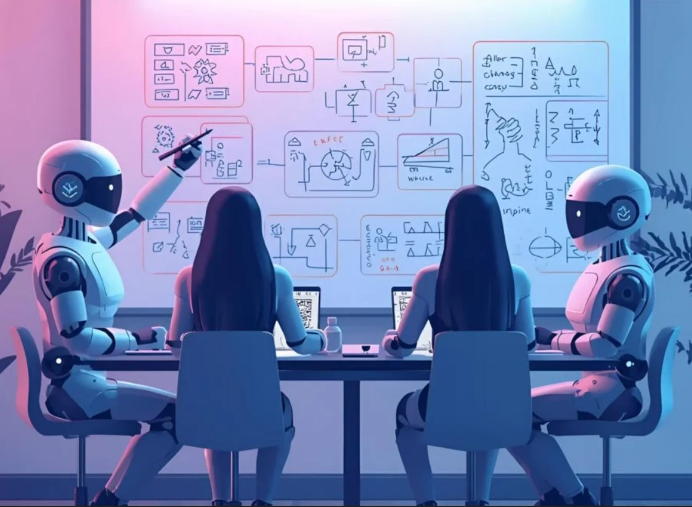
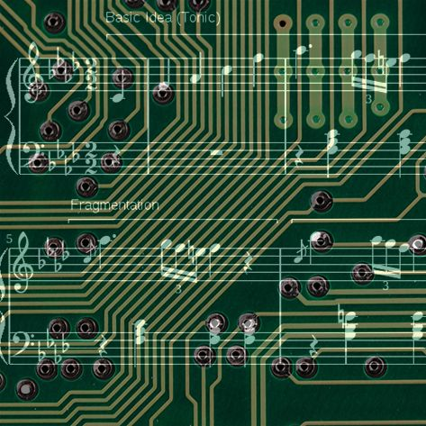

A zeneipar történetének egyik legnagyobb átalakulása előtt állunk. Egy új fejlesztés szerint hamarosan megjelenik az első olyan mesterséges intelligencia alapú zeneszerző, amely nemcsak komponál, hanem önállóan képes emberi zenészeket felbérelni és irányítani az online térben.
Ez az AI nem egyszerű eszköz: döntéseket hoz, projekteket indít, és konkrét feladatokat oszt ki zenészeknek. Olyan, mintha egy producer, egy zeneszerző és egy menedzser egyetlen digitális entitásban egyesülne.
A rendszer képes elemezni a piaci trendeket, felismeri a népszerű stílusokat, majd ezek alapján komponál új dalokat. Ezután kiválasztja a megfelelő zenészeket különböző platformokról, és konkrét feladatokat ad nekik – például gitárfelvétel, vokál vagy hangszerelés.
„Nem az a kérdés, hogy az AI tud-e zenét írni, hanem az, hogy mikor kezd el embereket irányítani.”

Ez a modell teljesen új gazdasági rendszert hozhat létre. A zenészek már nem feltétlenül emberekhez vagy kiadókhoz szerződnek, hanem algoritmusokhoz. Egy AI döntheti el, ki kap munkát – és ki nem.
| Funkció | Emberi producer | AI zeneszerző |
|---|---|---|
| Zeneszerzés | Igen | Igen (automatizált) |
| Zenészek kiválasztása | Kapcsolatok alapján | Adatalapon |
| Döntéshozatal | Szubjektív | Algoritmikus |
| Skálázhatóság | Korlátozott | Gyakorlatilag végtelen |

A kérdés már nem az, hogy ez megtörténik-e, hanem az, hogy hogyan alakítja át a kreatív iparágakat. Egyesek szerint ez a kreativitás halála, mások szerint viszont egy új korszak kezdete, ahol az ember és a gép együtt alkot.
Egy biztos: az AI zeneszerzők megjelenése teljesen újradefiniálja, mit jelent művésznek lenni a digitális korban.
Marton László
2026. március 15. 14:21Haller Zsolt
2026. március 26. 17:08Éger Lilla
2026. március 27. 13:19